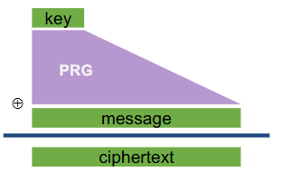
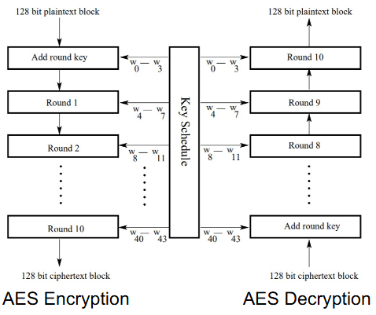

复习知识要点
1. 概论
基本安全属性的理解
Confidentiality（保密性）
- Confidentiality 是信息的隐瞒
- Data Confidentiality：确保私人或机密信息不会提供给或披露给未经授权的个人
- Privacy：确保个人控制或影响哪些和他们有关的信息被收集，以及这些信息会被谁以及向谁披露
Integrity（完整性）
- Integrity 是防止未经授权的更改
- Data Integrity：确保数据和信息仅以指定和授权的方式进行更改
- System Integrity：确保系统以不受损害的方式执行预期功能，不受故意或无意的未经授权的操作对系统执行
Availability（可用性）
- Availability 是使用信息或资源的能力
- 确保系统迅速工作，并且不会拒绝向授权用户提供服务
Threats and Attacks：能够初步完成威胁模型（Threat model）的分析
Assets：我们要保护什么？这个资产有多少价值？
Adversaries：(对手)谁可能会尝试攻击，为什么？
Vulnerabilities：系统可能多么薄弱？
Threats：攻击者可能会采取哪些措施来利用漏洞
Risk：资产有多重要？漏洞利用的可能性有多大？
Possible Defenses：
- 不是“传统的”威胁建模，但很重要（无论是整个过程，还是为了在帮助威胁建模之前更好的了解系统）
- 好处：系统可能会使谁受益，以及如何受益
- 危害：系统可能会伤害谁，如何伤害
没有完美的安全，但是攻击者的资源有限。**让他们付出不可接受的代价/承担不可接受的风险来取得成功！**根据上下文来定义安全。
Security Principles安全原则
-
能够理解各安全原则的基本含义，识别出遵从/违背安全原则的设计
安全原则
Know Your Threat Model
Security is Economics
Secure the Weakest
Defense in Depth
Use Fail-Secure Defaults
Least Privilege
Compartmentalization
Hard to Hide Secrets
Separation of Responsibility
Minimize Attack Surface
Have Good Usability
Detect if You Can’t Prevent
Design in Security from the Start
Principle 0: 了解您的威胁模型
攻击者是谁以及他们拥有哪些资源
Principle 1: 安全就是经济
-
防御成本应低于发生攻击的成本
-
安全性越高（通常）成本越高
-
如果攻击的成本高于奖励，攻击者可能不会这样做
Principle 2：保护最弱者
-
安全是一个链条：系统的安全性取决于最薄弱的环节。
-
将精力花在提高系统最薄弱部分的安全性上，因为这是攻击者攻击的地方。
Principle 3：纵深防御
-
攻击者只需要在一个地方获胜
-
防守方的回应：深度防御
-
应将多种类型的防御措施分层在一起
- 如果一个层失败，希望另一个层可以成功。
-
保护最弱者并深度防御
- 保护最薄弱的环节适用于非重叠函数
- 纵深防御适用于同一功能
层（Layers）
-
计算机系统有多个层
-
硬件组件
-
芯片组 / MB
-
OS
-
TCP / IP
-
HTTP 应用程序
-
安全 http 层
-
Javascript
-
用户/智能卡接口
-
多层防御
- 每一层都引入了额外的安全措施
- 每个层可以包含多个级别的控制
但是要记住
- 防御不是免费的
- 收益递减：防御通常小于其各部分的总和
- 2 堵墙比 1 堵墙好得多
- 101 堵墙并不比 100 堵墙好多少
Principle 4：使用 Fail-Secure 默认值
当系统出现故障时，它们不应恢复到不安全的行为。否则，攻击者只需要调用正确的失败。（故障安全系统）
默认为deny access，比如默认执行 false，只有判断安全才会执行true。
Principle 5：最小权限
只应授予执行操作所需的最低访问权限，并且应仅授予该访问权限所需的最短时间。
当代码可能执行的系统范围操作受到限制时，一个应用程序中的漏洞不能用于利用系统的其余部分。
Principle 6: Compartmentalization
- 将系统分解为尽可能多的独立单元
- 通过将系统分解成多个单元来最大限度地减少可能造成的伤害
- 很少有操作系统这样做，因为它难以管理
- 使用不同的机器执行不同的任务
Principle 7: 难以隐藏secret
-
“机制的安全性不应取决于其设计或实施的保密性。”
-
“即使关于系统的所有内容（除了密钥）都是公共知识，加密系统也应该是安全的。”
——Kerckhoff’s Principle
Principle 8: 责任分离
-
也称为分布式信任
-
如果您需要拥有特权，请考虑要求多方合作（串通）以行使该特权
Principle 9: 最小化攻击面
- 最小化
- 打开的插槽数量
- 服务数量
- 默认运行的服务数量
- 以高权限运行的服务数量
- 动态内容网页数
- 具有管理员权限的帐户数
- 访问控制较弱的文件和目录数量
Principle 10: 具有良好的可用性
-
了解您的用户
- 如果太麻烦，他们会关闭安保。
- 他们不阅读文档
- 他们无视警告 – 他们只想得到他们想要的！
-
如果您的安全机制太烦人和痛苦，您的用户将不遗余力地规避或避免它们。确保您的安全系统达到所需的安全性，但仅此而已。
Principle 11: 如果无法预防，则进行检测
- 威慑：通过让攻击者更喜欢执行其他操作来阻止攻击
- 预防：通过使攻击失败，在攻击发生之前阻止攻击
- 检测：了解存在攻击（发生后）
- 响应：对攻击执行一些操作（在攻击发生后）
Principle 12: 从一开始就进行安全设计
在构建新系统时，请将安全性作为设计注意事项的一部分，而不是在事后对其进行修补。
2. 对称加密
基本的密码学术语及对应关系（Basic Cryptography Terminology）
- Plaintext – 原始消息
- Ciphertext – 编码消息
- Key – 只有发送方/接收方知道的密码中使用的信息
- Encryption– 将明文转换为密文
- Decryption – 将密文转换为明文
- Cipher – 用于执行加密 （encipher） 或解密 （decipher） 的算法
针对加密消息的攻击类型
- 攻击者知道：只有密文。
- 攻击者知道：（1）密文，（2）与密钥形成的一个或多个原始消息-密文对。
- 攻击者知道：（1）密文，（2）攻击者选择的明文消息，以及使用密钥生成的相应密文。
对称加密的基本构成
-
对称密钥加密方案有三个算法：
- KeyGen（） → K：生成一个密钥 K
- Enc（K， M） → C： 使用密钥 K 加密明文 M，生成密文 C
- Dec（K， C） → M：使用密钥 K 解密密文 C
-
性质
- 正确性：解密密文应生成最初加密的消息
- 高效性：加密/解密算法应该很快
- 给定明文和密钥，计算密文的计算效率很高。
- 给定密文和密钥，计算纯文本的计算效率很高。
- 安全性：保密性
- 给定没有密钥的密文，计算纯文本在计算上是不可行的。
对机密性更好的定义叫做 IND-CPA (indistinguishability under chosen plaintext attack)，在选择明文攻击下的不可区分性。
One-Time Pad (OTP)

Encryption: 𝐶 = Enc(𝐾, 𝑀) = 𝑀 ⨁ 𝐾 Decryption: Dec(𝐾, 𝐶) = 𝐶 ⨁ 𝐾 = (𝑀 ⨁ 𝐾) ⨁ 𝐾 = 𝑀
密钥 K 是随机选择的 bitstring。
如果对两个密文进行 XOR 运算，就会学习到 M_0 ⊕ M_1！这是有关消息的部分信息！攻击者可以猜M_0并检查M_1是否与她的猜测相符，反之亦然。因此如果密钥被重复使用，则One-Time Pad不安全。
唯一实际应用：提前传达密钥，这样密钥只会用到一次。
Stream Ciphers（流密码）
问题：OTP 密钥与信息的长度相同
解决方案：Pseudo random key - stream ciphers（伪随机密钥 - 流密码）
𝐶 ← PRG(𝐾) ⊕ 𝑀
掌握 Feistel Cipher 结构
几乎所有传统的块加密算法（包括 DES）都具有由 IBM 的 Horst Feistel 于 1973 年首次描述的结构。
输入：一个数据块和一个密钥
将数据块分为两半 L 和 R。
经历几轮。在每一轮中，
- R 不会改变。
- L 执行依赖于 R 的运算和从该密钥派生的round key。
Feistel 网络的具体实现取决于以下参数和功能的选择：
- 区块大小：区块大小越大意味着安全性更高
- 密钥大小：密钥大小越大意味着安全性越高
- 回合数：多个回合提供更高的安全性
- 子密钥生成算法：复杂性越高，密码分析难度越大
DES的发展以及其基本结构（Lec03 Page64）
1970 年代/80 年代/90 年代使用最广泛的分组密码。块大小 64 位 （n = 64）;密钥大小 56 位 （k = 56）
但是，由于密钥大小小，现代计算机速度使其完全不安全
理解 Avalanche Effect（Lec03 Page66）
纯文本或密钥中的微小更改会导致密文发生重大变化。
完备性效果：密文的每个 bit 都需要依赖明文上的很多 bit。DES 中 D-box 和 S-box 产生的扩散和混淆，表现出非常强的完备性效果。
多重加密的安全性，以 2DES 的安全性为主
考虑具有两个密钥的 2DES：
𝑐 = EK2(EK1(𝑚))
𝑚 = DK1(DK2(𝑐))
Advanced Encryption Standard (AES)
AES 的发展历史以及其一般结构
- 密钥大小 128、192 或 256 位（k = 128、192 或 256）
- 实际密码名称为 AES-128、AES-192 和 AES-256
- 像 NSA 这样的偏执狂使用 AES-256 密钥，但 AES-128 在实践中很好
- 块大小 128 位 （n = 128）
- 注意：无论密钥大小如何，块大小仍始终为 128 位
AES 也有字的概念：一个字由四个字节组成，即 32 位。因此，state 数组的每一列都是一个单词，每一行也是如此。

不同的密钥大小使用不同的轮数
每一轮都使用自己的“轮次密钥”，该密钥派生自密码密钥
AES：整体结构
了解 AES 中的四种变换及其设计原理（不需要记忆Boxes）（Lec03 Page78）
- Substitute Bytes
- Shift Rows
- Mix Columns
- Add Round Key
AES 密钥扩展算法以及其设计原理（Lec03 Page89）
分组加密工作模式 Modes of Operation
- 电子密码簿模式 （ECB）Electronic Codebook Mode
- 密码块链接模式 （CBC）Cipher Block Chaining Mode
- 输出反馈模式 （OFB）Output Feedback Mode
- 密码反馈模式 （CFB）Cipher Feedback Mode
- 计数器模式 （CTR）Counter Mode
Electronic Code Book (ECB)
我们刚刚就设计了一个 ECB 模式。
- 最简单模式
- 明文一次处理 b 位
- 每个块都使用相同的密钥进行加密
- 对于给定的密钥，每个 b 位纯文本块都有一个唯一的密文
- 每个 b 明文位块都使用相同的密钥独立编码
AES-ECB 不是 IND-CPA 安全的。为什么？
- 因为 ECB 是确定性的。
Strength and Weakness of ECB
- Strength
- 简单
- 有效
- Weakness
- 加密的消息块是独立的
- 消息重复可能以密文形式显示
- 如果与消息块对齐
- 特别是对于图形等数据
- 或者使用变化很小的消息，这成为 Codebook 分析问题
在这种情况下，ECB 失效了。
Cipher block chaining mode (CBC) ——最受欢迎
我们现在要努力重新设计一个，因为 ECB 不是 IND-CPA 安全的，他是确定性的。
想法：第一个密文块的计算具有一定的随机性。让我们用它来为第二个块添加随机性，并以此类推，这就是 CBC 模式。
-
明文被分成块：P1、P2、P3、…
-
在加密之前，每个明文块都与前一个密文块进行 XOR 运算（链接）：
Ci = Ek ( C i - 1 ⨁ Pi)
C0 = IV
-
使用初始向量 （IV） 启动该过程，该向量是随机生成的。
-
解密
Pi = Ci - 1 ⨁ Dk (Ci)
CBC 模式：效率和并行性
- 加密可以并行化吗？
- 不，我们必须等待区块 i 完成，然后才能加密区块 i + 1
- 解密可以并行化吗？
- 是的，解密只需要密文作为输入
CBC 模式：填充
如果要加密不是块大小的倍数的消息，该怎么办？
- 仅当明文长度是块大小的倍数时，才定义 AES-CBC
- 填充消息，直到它是块大小的倍数
- 用 0 填充？不起作用：如果我们的消息已经以 0 结尾怎么办？
- 用 1 填充？同样的问题。
填充方案
- 附加一个 ‘1’，然后用 ‘0 填充 ‘0’
- 如果明文是 n 的倍数，你仍然需要用整个块填充
- 用填充的字节数来填充
- 如果你需要 1 个字节，用 01 填充;如果需要 3 个字节，请用 03 03 03 填充
- 如果需要 0 个填充字节，请填充整个虚拟块
- 这称为 PKCS #7
Strength and Weakness of CBC
- Strength
- 块的加密取决于当前块和之前的所有块。
- 因此，重复的纯文本块的加密方式不同。
- Weakness
- 修改密文块
- 仍然不保证完整性
设计流密码
CBC 模式很好，但它不是流密码，我们如何基于分组密码设计流密码？
- 为了加密 P1、P2、P3、…，我们想用 Ek 为每个 P 生成不同的密钥： K1、K2、K3、…，
- 然后加密 Pi为 Ci = Pi ⨁ Ki
- 生成 K1、K2、K3、… 的三种不同方法
- 计数器模式 （CTR）
- 密码反馈 （CFB） 模式
- 输出反馈 （OFB） 模式
CTR Mode
使用一个随机数 nonce 然后随着每个 block 加密递增，以确保每个数据块密码输出都不同。
CTR 模式：效率
- 加密可以并行化
- 解密也可以并行化
CTR 模式：填充
不需要填充消息，可以剪掉比消息长的部分。
Cipher Feedback Mode (CFB)
-
明文是 s 位 （s ≤ block size） 的段序列：P1、P2、P3、…
-
加密用于生成一系列密钥，每个密钥都是 s 位：K1、K2、K3、…
-
密文为 C1、C2、C3、… ，其中
Ci = Pi ⨁ Ki
CFB 模式：生成 Key 流
-
分组密码的输入是一个移位寄存器 x，其在阶段 i 的值表示为 xi
-
Initially,
x1 = an initial vectot (IV)
-
For i > 1,
xi = shift-left-s-bits (xi - 1) | Ci - 1
-
Then
Ki = s-most-significant-bits(EK(xi))
Strength and Weakness of CFB
- Strength
- 与 ECB 和 CBC 相比：
- 分组密码用作流密码。当数据以位/字节为单位到达时适用。（s 可以是任何值;常用值为 s = 8）
- 密文段取决于当前和所有前面的纯文本段。
- 与 OFB 相比：
- 可以随时解密。无需从头开始。这使得 CFB 模式非常适合解密加密的随机访问文件等应用程序。
- 与 ECB 和 CBC 相比：
- Weakness
- 传输过程中损坏的密文段最多会影响 （b/s） + 1 个明文段。
OFB mode
-
结构与 CFB 非常相似
-
不同之处：
-
Initially,
x1 = an initial vectot (IV)
-
For i > 1,
xi = shift-left-s-bits (xi - 1) | Ki - 1
-
Then
Ki = s-most-significant-bits(EK(xi))
Comparing Modes of Operation
- 如果你需要高性能，哪种模式更好？
- CTR 模式，因为您可以并行加密和解密
- 如果您对安全性偏执，哪种模式更好？
- CBC 模式更好
- 但是，如果使用不当（IV/nonce 重复使用），CBC 只会泄露部分信息，并且 CTR 会发生灾难性失败
- 分组密码专为机密性而设计，如果攻击者篡改了密文，我们不能保证能检测到它
3. 完整性 (Integrity)
完整性基本概念
攻击者无法在不被发现的情况下更改消息
- 与机密性的区别
（密码学）Hash 函数的基本思想
哈希也称为消息摘要，将任意长度的消息转换为固定长度的摘要，使得文件是否被攻击过变得可识别
理解 One-wayness、（Weak/Strong）Collision resistance的含义以及其之间关系
单向性：给定 H（x），难以找到 x
抗碰撞性：难以找到 x、x′，使得 H（x） = H（x′）
了解常用的 Hash 函数以及其一般结构
MD5
输出：128 位
安全性：完全破解
SHA-1
输出：160 位
安全性：2017 年完全破解
在 2017 年之前已知较弱，但有时仍会使用
SHA-2
输出：256、384 或 512 位（有时标记为 SHA-256、SHA-384、SHA-512）
目前没有破解，但某些变体容易受到长度延长攻击
SHA-3 （Keccak）
输出：256、384 或 512 位
当前标准（并非要取代 SHA-2，只是不同的结构）
应用：Password Hashing
存储 hash（password） 而不是 user password，而不是 user password，当用户输入密码时，计算其哈希值并与密码文件中的条目进行比较。系统不存储实际密码！无需担心密钥存放在哪里！无法从 hash 转到 password！
Salted Hashes
哈希是确定性的：它们将具有相同的密码哈希，攻击者可以看到哪些用户正在使用相同的密码，攻击者可以预先计算常见密码的哈希值。
解决方案 #1：为每个用户添加唯一的随机盐，要验证用户：在 passwords 文件中查找他们的盐，计算 Hash（password || salt），并检查它与文件中的哈希值匹配
解决方案 #2：使用较慢的哈希值，合法用户只需提交几次密码尝试。用户不会注意到服务器检查密码需要 0.0001 秒还是 0.1 秒。攻击者需要计算数百万个哈希值。使用慢速哈希可以将攻击者的速度降低 1,000 倍或更多！
理解Hash函数在何种情况无法提供完整性保护？
这取决于您的威胁模型！
威胁模型：我们假设攻击者无法修改网站上的哈希值
只要我们能安全地传达哈希值，我们就有 integrity
威胁模型：攻击者可以修改消息和哈希
没有 integrity！
消息认证码 Message Authentication Codes (MACs)
使用方式和定义
消息认证码（或 MAC）由以下三种算法组成
k ← KeyGen()
t ← MAC(k, m)
b := Verify(k, m, t)（b = 1 表示有效，b = 0 表示无效）
区别伪造攻击的几种方式
- 存在形伪造 Existential forgery
- 攻击者在查询 MAC 预言机后选择要伪造的消息
- 选择性伪造 Selective forgery
- 攻击者在执行攻击之前选择一条消息，然后无法查询该消息
- 通用伪造 Universal forgery
- 攻击者在查询 MAC 预言机后可以为任何消息创建 MAC
NMAC
NMAC(𝑘, 𝑚) = Hash(𝑘1||Hash(𝑘2||𝑚))
如果两个密钥不同，则 NMAC 是安全的,使用两个哈希值可以防止长度延长攻击
HMAC（Lec05 Page52）
NMAC 的问题：我们需要两个不同的密钥，Key 必须是哈希输出大小
HMAC(𝑘, 𝑚) = Hash[(𝑘+⨁ opad)|| Hash[(𝑘+⨁ipad)||𝑚)]]
k+是填充（用 0）到 B 字节的密钥，哈希函数的输入块大小
ipad = 重复 B 次0x36字节
opad = 重复 B 次0x5C字节。
Constructing MAC using Block Cipher（Lec05 Page56）
理解 MACs 的完整性保证和机密性保证
攻击者无法在不被发现的情况下篡改消息
MAC 通常没有机密性保证;他们可以泄露有关消息的信息
HMAC 不会泄露有关消息的信息，但它仍然是确定性的，因此它不是 IND-CPA 安全的
Authenticated Encryption（经过身份验证的加密）（Lec05 Page68）
经过身份验证的加密 （AE）：一种同时保证邮件的机密性和完整性（以及真实性，具体取决于您的威胁模型）的方案
4. 非对称加密/公认密钥学
- 基于公钥密码学的加密基本流程
- 基于公钥密码学的认证基本流程
- 公钥加密的要求
- Key Generation 、加密、解密
- 基本的模运算
Diffie-Hellman
- 能够应用 Diffie-Hellman 密钥交换
- 了解 Diffie-Hellman 的安全性
- Diffie-Hellman 的中间人攻击（MITM Attack）
RSA
- RSA 的加密解密流程
- 理解并应用 Square-and-multiply 算法
- 了解 RSA 密钥生成过程
- 理解 RSA 的安全性保证
- 了解针对 RSA 的一些攻击
- 数字签名
- 如何用 RSA 实现数字签名：RSA Signature
PKI
- 理解密钥分发问题与 Certificates 的基本概念
- 了解几种PKI信任模型
- X.509
- 理解Certificate Revocation的含义
5. 认证
- 认证的目标：
- Mutual Authentication
- Key Establishment
- 理解并应用基于对称密钥的认证
- 理解并应用基于非对称密钥的认证
- 了解 Kerberos 并理解其设计原理
- Kerberos Realm
6. 数据隐私
- 基本定义与性质
- ɛ 的含义
- Laplace机制
- 敏感度分析Sensitivity
- 后处理（Post-processing）的特性
- 组合定理 Basic Composition Theorem
- Privacy for Non-Numeric Queries
- 隐私选择
- Private Median 的设计方法
- 本地化差分隐私（Local Differential Privacy）基本定义及方法
- Randomized Response
- Tradeoff between Utility and Privacy
7. 实用安全 Usable Security
- 实用的实人认证
- 常见实人认证机制及其优缺点
- Two-Factor Authentication
- 给定认证机制，分析其安全性与可能攻击面
8. 网络安全协议
ARP 攻击与 DHCP 攻击
传输层安全 SSL/TLS
-
SYN Flooding Attack 以及造成 TCP DoS 攻击的原因
-
理解 SSL/TLS 协议的基本流程和设计原理
-
TLS Handshake
-
SSL/TLS Record Protocol
- 完整性与机密性
-
TLS in Practice
提供什么保障、不提供什么
-
DNS
- DNS Lookup
- DNS Security
- DNS over TLS
- 性能？Caching？恶意的NS？…
- DNSSEC
- 设计思想
- DNS over TLS
9. Web安全
- 了解Web安全的基本模型
- 理解Cookies机制和应用
- 安全Cookies